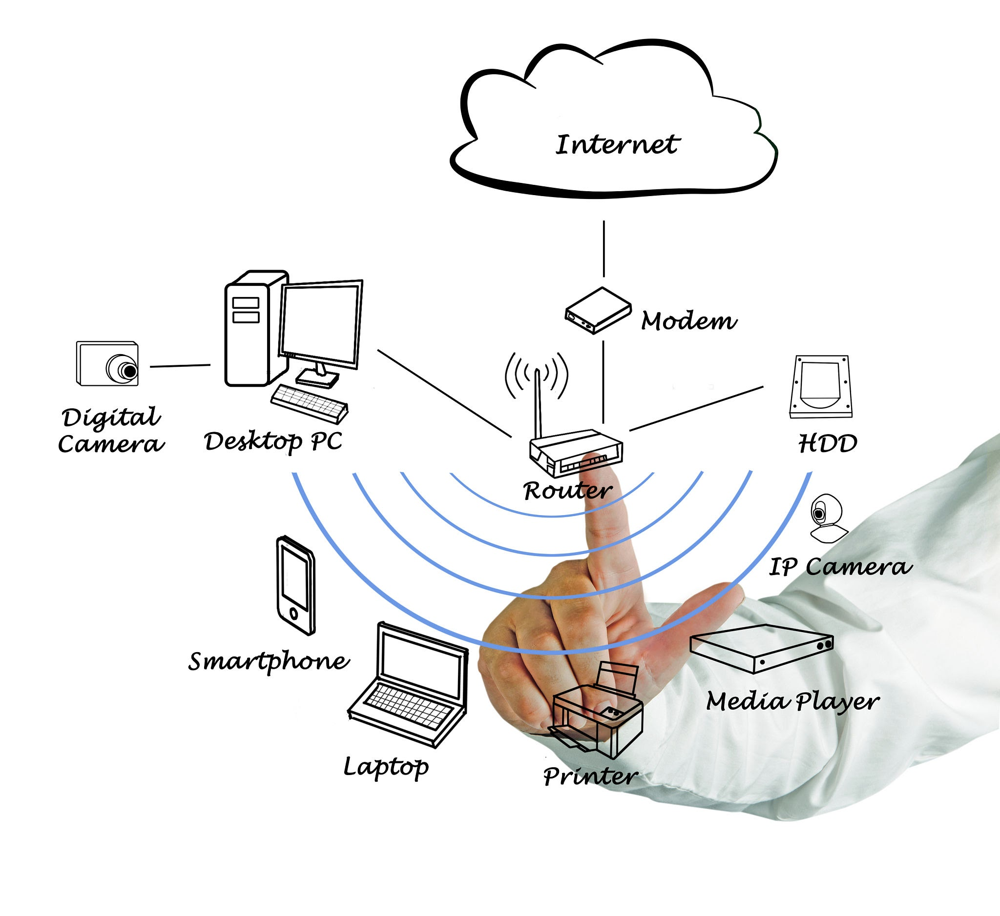
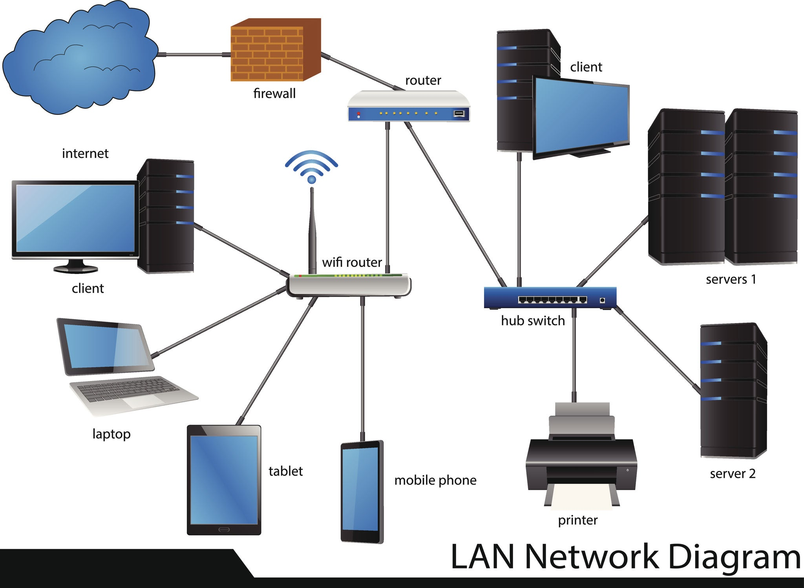
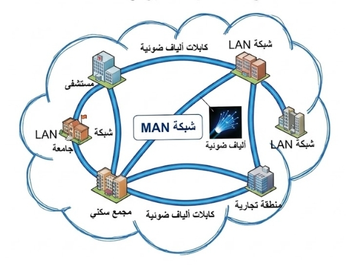
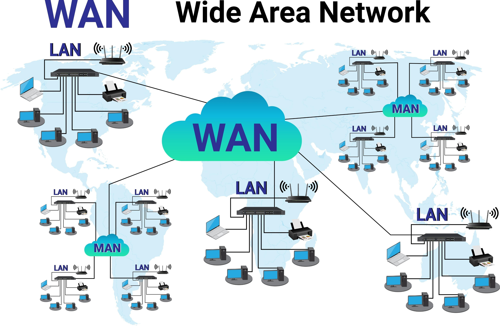

الشبكات Network
ما هي الشبكات؟:-
الشبكات هي اول نظام وضع لربط الحاسبات مع بعضها البعض وكذالك موارد الحاسبات بنفس الطريقة، التي تتم لربط التليفونات مع بعضها البعض عن طريق السنترالات.
استخدامات الخادم (Server):-
- تخزين و استرجاع الملفات.
- إدارة الشبكة.
- إدارة المستخدمين.
- تحقيق الأمن.
اهداف الشبكات:-
الشبكات تقلل المسافات و تعطي امكانية للمستخدم للحصول على معلومات في اي مكان كنت، اي ان الشبكات وضعت مبدأ جديد و هو الاتصال بدلاً من الانتقال.
الأسباب التي أدت إلى إنشاء شبكات الكمبيوتر:-
- المشاركة في البرامج والبيانات:
- حيث يمكن تخزين البرامج والبيانات على خادم الملفات FILE SERVER وتصبح متاحة لأي مستخدم من الشبكة.
- المشاركة في موارد الشبكات:
- من موارد الشبكات التي يمكن المشاركة فيها بحيث أن يقوم أكثر من مستخدم بإستخدامها آلات الطباعة وآلات الرسم.
- إنشاء أجهزة الحواسب الشخصية الرخيصة:
- حيث تقوم الشبكات بعمل نشر أو توزيع لأجهزة الحواسب الشخصية والتي لا تمتلك أقراص تخزين وتعتمد في عملها على تخزين الملفات والبيانات على خادم الملفات.
- القدرة على استخدام برمجيات على الشبكة:
- ومن أشهر البرمجيات المستخدمة على الشبكة هو أنظمة قواعد البيانات وكذلك البريد الإلكتروني.
- البريد الإلكتروني:
- يستخدم البريد الإلكتروني في إرسال واستقبال رسائل ووثائق من وإلى مستخدم واحد أو مجموعة من المستخدمين على الشبكة، وفيه يستطيع المستخدم تحقيق اتصال واحد مع مستخدم آخر في سهولة ويسر.
- إنشاء مجموعات العمل:
- الشبكات تسمح لمجموعات المستخدمين بتخصيص جزء من مساحات التخزين المتاحة لهذه المجموعات على أن تكون غير متاحة لأي مستخدم آخر خارج هذه المجموعات ويمكن إرسال رسائل إلى كل عضو في هذه المجموعات وذلك بإرسال الرسائل إلى اسم المجموعات GROUP NAME وليس لكل مستخدم على حدة.
- إدارة مركزية:
- نتيجة لأن معظم الموارد على الشبكة موجودة بجوار الخادم فإن الإدارة تصبح سهلة.
- التأمين:
- يستطيع مدير النظام بتحديد مساحات عمل خاصة لكل مستخدم على الشبكة.
- القدرة على ربط أنظمة تشغيل مختلفة مع بعضها.
- تحسين التعاون البنائي.
مكونات الشبكة:-
- الخادم: هو جهاز كمبيوتر كبير لربط باقي الأجهزة من خلاله حيث يحتوي على جميع البرامج والتطبيقات وتخزين الملفات والأوامر الخاصة بالشبكات وإدارة النظام.
- محطات عمل: عندما يتم ربط جهاز كمبيوتر على شبكة يصبح هذا الكمبيوتر عضواً في هذه الشبكة ويسمى محطات عمل.
- كروت الاتصال: كل جهاز كمبيوتر لابد أن يمتلك وسيط اتصال يسمى كارت الاتصال وذلك لربط الجهاز على الشبكة (مثل كارت الفاكس).
- الكابلات: عبارة عن الأسلاك المستخدمة لربط الخادم مع محطات العمل مع بعضها البعض لتكوين الشبكة.
- موارد الشبكة: مثل وحدات التخزين الملحقة مع الخادم وآلات الطباعة وآلات الرسم.
انواع الشبكات:-
شبكة الـ PAN: هي شبكة مخصصة لربط الأجهزة الشخصية القريبة جداً من الفرد (في حدود 10 أمتار) مثل ربط الهاتف بالسماعات أو الساعة الذكية، وتعتمد غالباً على تقنية البلوتوث (و PAN اختصار لكلمة Personal Area Network).

شبكة الـ LAN: هي اتصال عدد قليل من الأجهزة ربما لا يتجاوز العشرة متصلة مع بعضها ومعها جهاز طباعة، وعادة ما تعمل ضمن مساحة محدودة مثل مكتب أو بناية واحدة، وتقدم هذه الشبكات سرعة كبيرة لتبادل البيانات والموارد مما يشعر المستخدم أن هذه الموارد موجودة على جهازه الشخصي (و LAN اختصار لكلمة Local Area Network).

شبكة الـ MAN: هي تقوم على تقنية شبكات LAN، ولكن تعمل بسرعات فائقة وتستخدم في العادة ألياف ضوئية كوسط اتصال وهي عادة تغطي مساحة واسعة تتراوح بين 20 إلى 100 كيلومتر (و MAN اختصار لكلمة Metropolitan Area Network).

شبكة الـ WAN: ظهرت لدعم احتياجات الشركات الكبيرة التي تتوزع مكاتبها على مساحات شاسعة ربما على مستوى عدة دول، حيث تقوم بربط الشبكات المحلية في أنحاء مختلفة من دولة ما أو ربطها في دول مختلفة، وأشهر أمثلتها شبكة الإنترنت التي تغطي العالم (و WAN اختصار لكلمة Wide Area Network).
